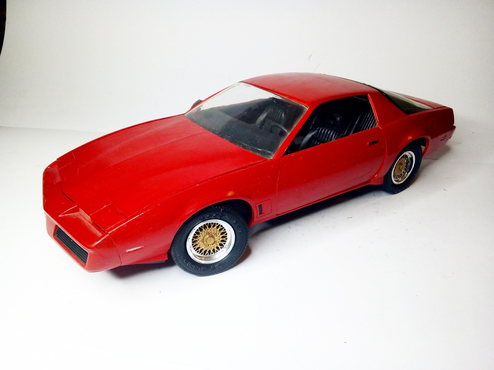
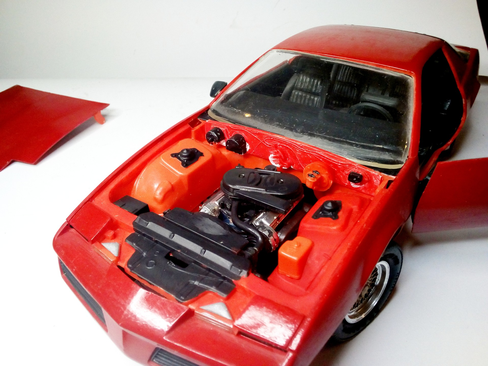
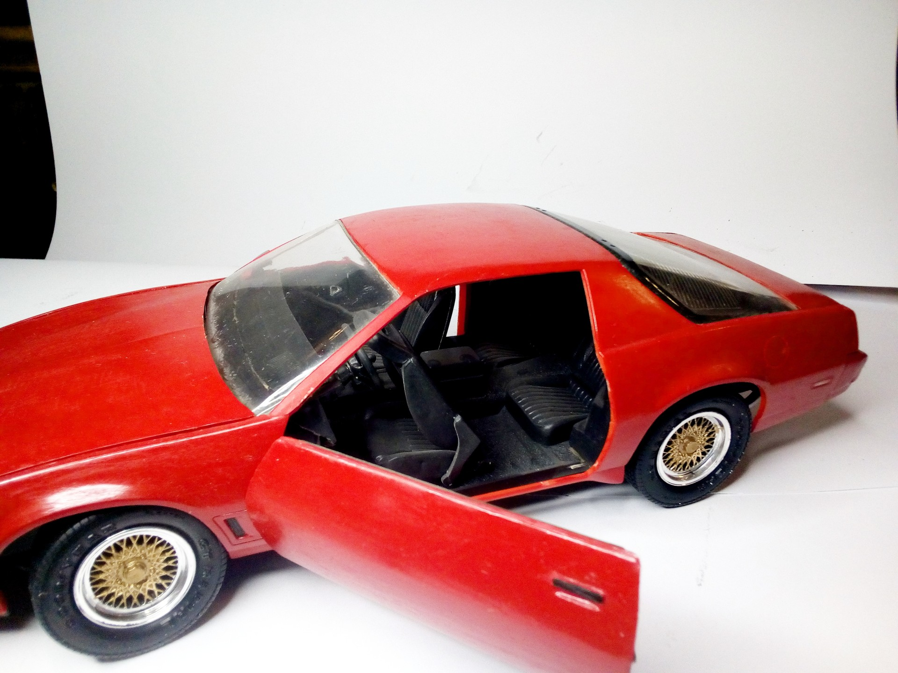
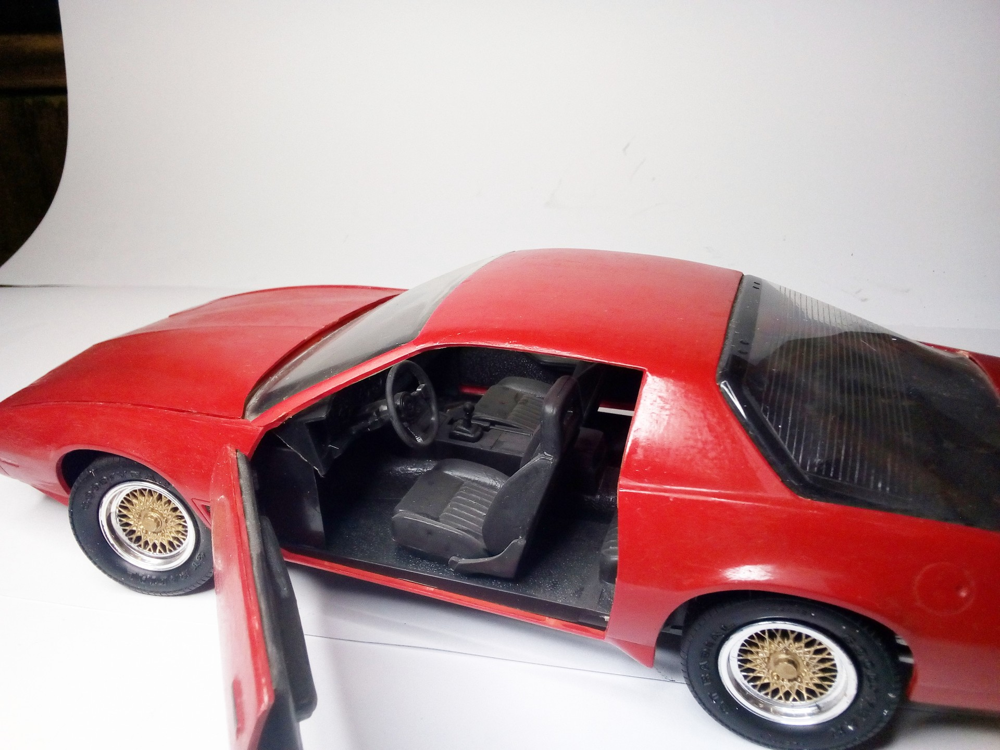
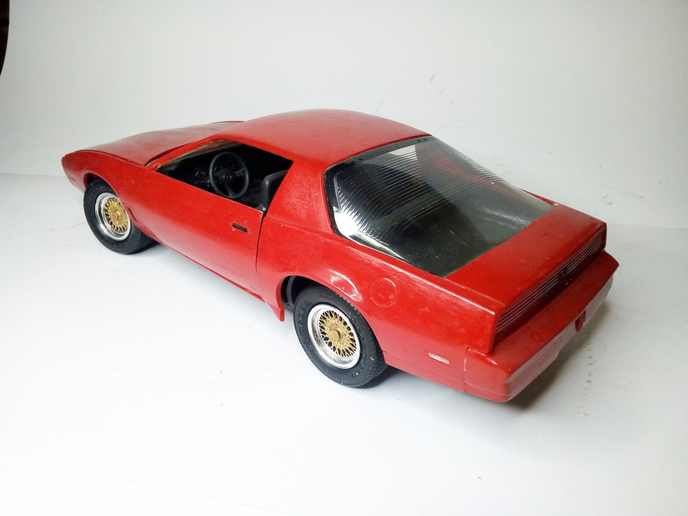

Auto e veicoli stradali · scale model archive
Pontiac Firebird Trans Am model year 1985
Pontiac Firebird Trans Am model year 1985 — Kit: MPC, Scale: 1/16. Beautiful car, unusual 1/16 scale #1/16

Photo gallery




English description
Beautiful car, unusual 1/16 scale
#1/16
Descrizione italiana
Bella auto, insolito 1/16 scala.